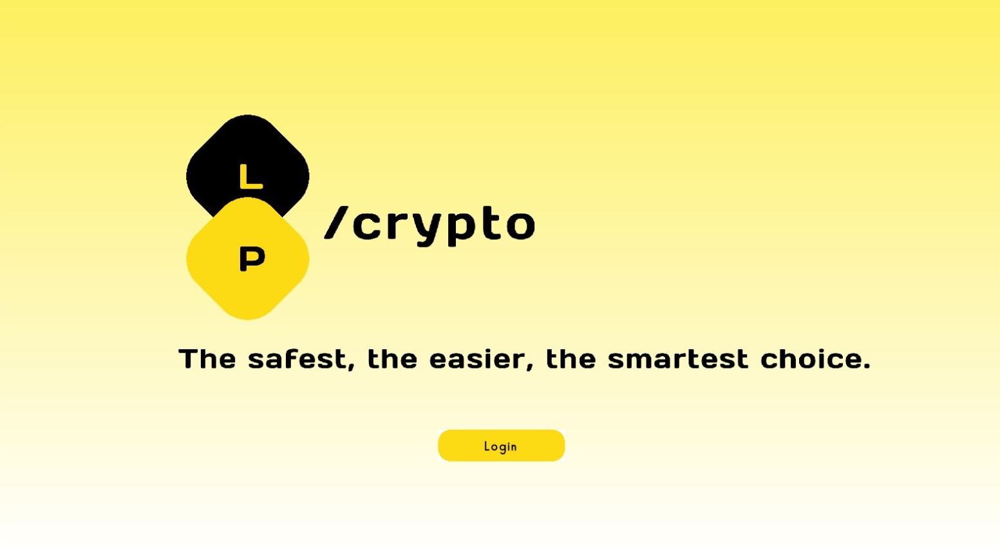
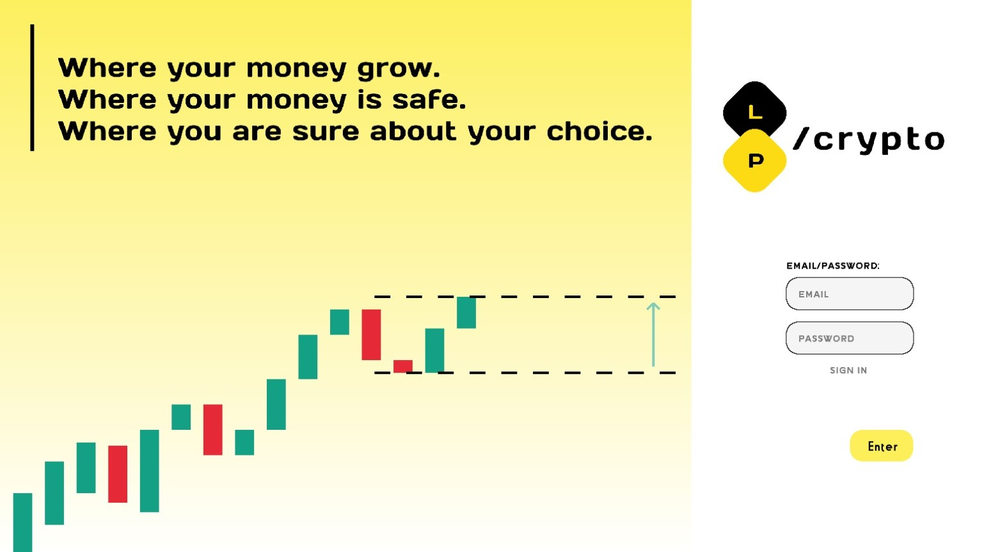

Pedro de Carvalho
| Sobre
Sou estudante de Ciência da Computação, atualmente no quarto período, com experiência em desenvolvimento de software adquirida por meio de projetos acadêmicos e pessoais. Tenho especial interesse pelas áreas de segurança cibernética e suas vertentes, nas quais desejo aprofundar-me tanto no aspecto técnico quanto no teórico.
Possuo sólida base na linguagem C e no desenvolvimento web, com projetos concluídos que atestam minha capacidade de aplicar fundamentos de programação a soluções práticas e funcionais. Busco constantemente aliar a precisão técnica ao cuidado estético, de modo que meus trabalhos se distingam não apenas pelo desempenho, mas também pela clareza de uso e apresentação.
Como diferencial, destaco minha capacidade comunicativa, cultivada ao longo da vida mediante formações específicas e exercícios práticos. Esse atributo, aliado à atenção minuciosa aos detalhes, permite-me conduzir projetos de maneira estruturada, transparente e voltada ao usuário final.
Almejo integrar-me a um ambiente de rigor acadêmico e de valorização das boas práticas, onde eu possa contribuir com minhas competências técnicas e humanas, ao mesmo tempo em que desenvolvo plenamente minhas potencialidades como profissional da computação.
| Projetos
Pong
O primeiro projeto completo que desenvolvi, com minha equipe, no curso.
Nele, buscamos refazer o jogo Pong (um dos primeiros jogos desenvolvidos de
videogame), mas, em nosso projeto, o fizemos com um design mais bonito e
outros recursos, como o menu principal (foto abaixo), modos distintos de multijogador e Máquina contra jogador, além de outras features.
Numa rápida passada nos detalhes técnicos, assinala-se a base sendo a biblioteca 'Raylib', além do uso de funções e recursos lógicos simples da Biblioteca Padrão C ('stdio.h')


LP Crypto
Já no segundo semestre, quisemos, eu e meu companheiro de equipe, fazer um projeto mais avançado, utilizando estruturas de dados (em termos não técnicos, utilizando, de certo modo, uma lógica mais complexa, considerando tempo de execução e outras questões importantes), deste modo, ainda utilizando a biblioteca ‘Raylib’ , mas dessa vez com foco em aumentar a complexidade do projeto; criamos o ‘LP crypto’ , um simulador de banco de criptomoedas.
 Entre outros! Caso queira vê-los, alguns estão dispostos em meu github (para ver minhas redes sociais, clique aqui); saiba, ademais, que este portifólio também é um projeto pessoal!
| Mais
Visite Minhas Redes Sociais:
LinkedIn: Pedro Henrique de Carvalho
Github: Pedro-Garcia-1
Email: pedrogarciacarvalho2114@gmail.com